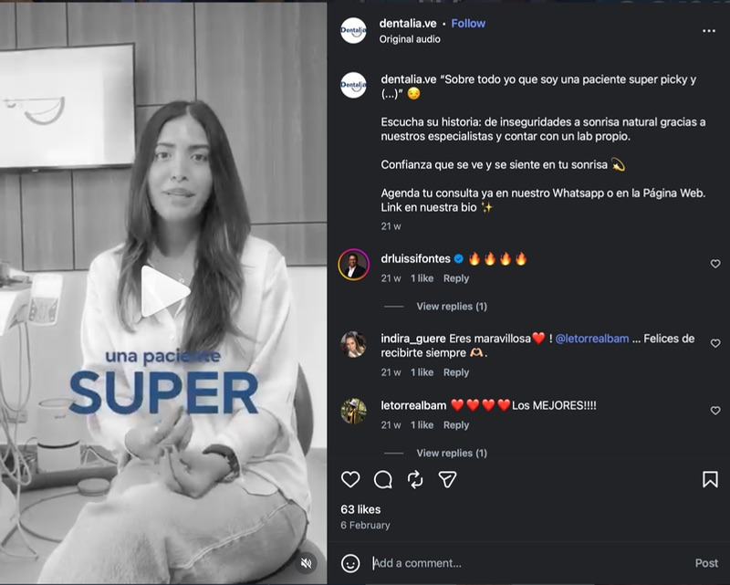
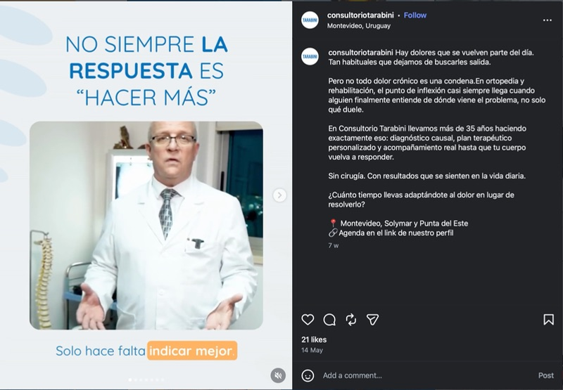
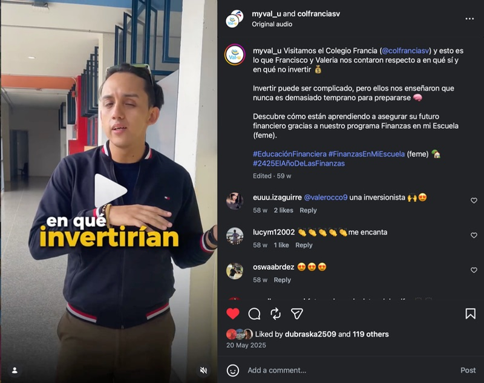
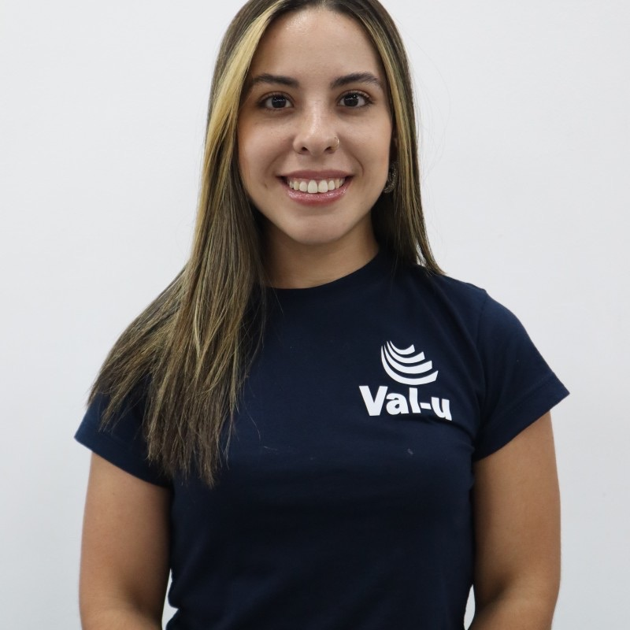
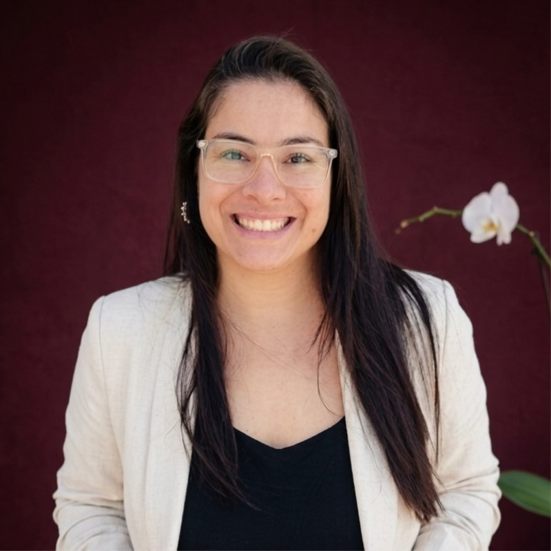

Content strategy for brands that have to explain something difficult.
Financial education, healthcare and course businesses · Caracas, Venezuela
Three years in-house and on contract building the system behind the content: newsletters,
lifecycle email, editorial calendars and short-form video. I start from what the audience
already responds to, measure the result against the business objective, and keep the whole
thing running when there is one person and eight accounts.
The problem. FINBI needed a financial newsletter that explained complex topics in plain language and tied every issue back to a course.
What I did. I benchmarked Morning Brew, Bloomberg and the FT to take the mechanics worth copying, simplified the concepts into practical tips and kept the tone light and accessible. Then I tested subject lines and calls to action against real reader response. Each issue closed on a course, so the list produced qualified leads.
Result. Zero to 5,000 subscribers, average open rate from 24% to 39% and a 6.9% click-to-open rate. I also framed the content and the programme for FINBI's first in-person community event.
The problem. Generic messaging gave students no reason to keep going, so drop-off piled up in the first weeks of the programme, across 30+ schools in Mexico and Venezuela.
What I did. A two-stage strategy: an onboarding sequence that set expectations, then segmented, behaviour-based content for students falling behind on lessons. I segmented with Mailchimp reporting and student-progression data, rewrote subject lines and message framing, and built it as a framework so the same logic held across a large international base.
Result. Open rate from 28% to 35%, click-to-open at 9% and module completion up 17%. I also scripted and directed two financial-education modules used by 1,000+ students, which supported around 100 enrolments through school sales conversations.
SBC Performance — community manager · Healthcare marketing · Remote · Jan 2026 – Jul 2026
8 concurrent accounts · 24+ weekly assets · carousel test 21 likes against an account average of 6
The problem. Eight healthcare accounts needed consistent engagement and visibility without losing a professional, trustworthy voice, and one producer had to keep them all publishing without gaps.
What I did. I owned content strategy for all eight: pillars, editorial calendars, weekly plans. Then ran end-to-end production of 24+ weekly assets plus SEO blog content, briefing design and leadership. Calendars, approvals, briefs and publishing lived in Notion, Slack and Meta Business Suite. Past performance decided the format: doctor-led, problem-based content earned priority because it resonated more with patients.
Result. A repeatable workflow that kept planning, approval, design and publishing aligned across eight clients. A doctor-led reel on last-minute cancellations reached 66 likes and 7 comments; a carousel built to test the same hypothesis beat the account's usual average of 6 likes with 21; a patient-testimonial reel for Dentalia reached 63 likes and 7 comments by structuring the story around the patient's outcome rather than a sales pitch.

Dentalia — patient testimonial reel, 63 likes. Copy and edit built around the patient's outcome.

Consultorio Tarabini — the carousel that tested the same hypothesis: 21 likes against an average of 6.
A classroom activity turned into a parent-facing reel
VAL-U — content creator & scriptwriter · Financial education · Remote · Jun 2023 – Feb 2024
120 likes · 7 comments · published 20 May 2025 with Colegio Francia
The problem. Financial education had to feel tangible, relevant and credible to parents, not only informative to students.
What I did. I picked a real classroom moment: students explaining which company they would invest in and why. The hook, script and narrative structure were built around practical decision-making instead of abstract finance concepts. I prepared the student responses, directed the storytelling and worked with design on the final edit.
Result. VAL-U's value proposition became visible instead of claimed: 120 likes and 7 comments out of a real investment scenario, led from concept to final cut.

The published reel on @myval_u, in collaboration with Colegio Francia: two students answering what they would invest in, and what they would not.
The problem. An account publishing daily at a median of 263 views per Reel. The brief asked how to improve the hook. The real question was why competitors selling the same course reach a thousand times the audience.
What I did. I measured the category instead of trusting the brief: 707 competitor Reels across three accounts, 53 outliers downloaded and coded frame by frame against the first three seconds, and the brand's own 12 Reels coded with the same rubric. Then I read 38,782 site sessions and the email and CRM setup behind the account.
What I found. The brand states the money in the first second but films a salon and a face. The accounts doing millions cut to scalp, hands and comb and answer the price objection head-on; the leading account shows no face in 24 of 24 outliers.
What I delivered. The audit and the go-forward plan: pillars, first-three-second rules, hook and objection frameworks, and the publishing route.
I start by measuring what the audience already responds to, rather than what the brand assumes. Most content problems are not writing problems. They are questions nobody asked, answered in a format nobody watches.
Then I build the system around the answer: pillars, calendars, scripts, email flows, approval routes. Systems are what let one person run eight accounts, or scale one newsletter to five thousand readers.
And I measure the outcome against the business objective — open rate, completion, enrolments, reach — not against how good the piece felt when it shipped.
Caracas. The formal version travels with the résumé.
What the people I worked with say
“I worked with Alejandro at FINBI between January 2022 and January 2023, where he developed the weekly financial content newsletter that contributed to an increase in the number of registered users and helped channel leads toward the company's educational programs.”
José Miguel Farías · CEO & FINBI founder

“I worked with Alejandro at VAL-U between June 2023 and February 2024, where he designed the educational modules delivered to more than 1,000 students in Mexico and Venezuela, helping the sales team drive new enrollments, and improved the open rate of our student activation emails.”
Dubraska Villalonga · CEO, VAL-U

“I worked with Alejandro at SBC Performance between January and July 2026, where he managed the content strategy for our 8 healthcare accounts, coordinating editorial calendars and design briefs that helped maintain visual consistency and improve audience interaction with the published content.”
Gabriela Pastorelli · Co-founder, SBC Performance
Let's talk about what the audience is actually doing.
Caracas, Venezuela · UTC−4 · Spanish native · English C1
Open to full-time content strategy and social media roles, remote or based in Caracas.
Full résumé and references available on request.